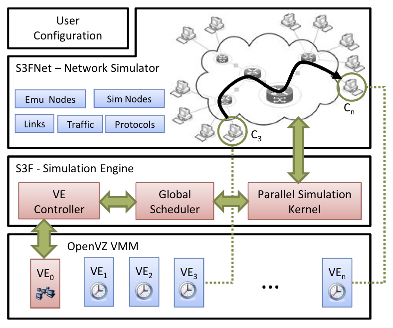

SSF (Scalable Simulation Framework) defines an API that supports modular construction of simulation models, with automated exploitation of parallelism. Building on ten years of experience, we have developed a second generation API, named S3F, to better reflect use and support maintainability.
S3FNet is a network simulator built on top of the S3F kernel. It is capable of creating communication network models with network devices (e.g., host, switch, and router) and layered protocols (e.g., TCP/IP, OpenFlow). We also expand its capacity by integrating the network simulator with the OpenVZ-based network emulation. Users can use emulation to represent the execution of critical software, and simulation to model an extensive ensemble of background computation and communication.

Main Features
Parallel discrete-event simulation
Virtual-machine-based (OpenVZ) emulation (embedded in virtual time instead of wall-clock time)
Simulation and emulation of OpenFlow-based software-defined networks (SDN)
A lightweight Linux-container-based virtual time system (source code)
Seamless integration of simulation and container-based emulation
Temporal fidelity and scalability enhancement
Applications
S3F has been used to simulate and evaluate application systems in various domains including smart power grid, HPC systems, data centers, and high-speed railway control and communication systems.
Selected Publications
Christopher Hannon, Jiaqi Yan, Dong Jin, and Yuan-An Liu.
A Distributed Virtual Time System on Embedded Linux for Evaluating Cyber-Physical Systems.
2019 ACM SIGSIM Conference on Principles of Advanced Discrete Simulation (PADS), June 2019.
Best Paper Award[pdf]
Christopher Hannon, Jiaqi Yan and Dong Jin.
DSSnet: A Smart Grid Modeling Platform Combining Electrical Power Distribution System Simulation and Software Defined Networking Emulation.
2016 ACM SIGSIM Conference on Principles of Advanced Discrete Simulation, Banff, Canada, 2016.
Finalist for the Best Paper Award; Best Poster Award[pdf][source code]
Dong Jin and David Nicol.
Parallel Simulation and Virtual-machine-based Emulation of Software-defined Networks.
ACM Transactions on Modeling and Computer Simulation (TOMACS), December 2015.
[pdf]
Jiaqi Yan and Dong Jin.
A Virtual Time System for Linux-container-based Emulation of Software-defined Networks.
ACM SIGSIM Conference on Principles of Advanced Discrete Simulation, London, UK, June 2015.
Finalist for the Best Paper Award[pdf][poster]
Dong Jin, Yuhao Zheng, Huaiyu Zhu, David M. Nicol, and Lenhard Winterrowd.
Virtual time integration of emulation and parallel simulation.
26th Workshop on Principles of Advanced and Distributed Simulation (PADS), Zhangjiajie, China, 2012, pp. 120–130.
Best Paper Award[pdf]
David Nicol, Dong Jin, and Yuhao Zheng.
S3F: The scalable simulation framework revisited.
2011 Winter Simulation Conference (WSC), Phoenix, AZ, December 2011, pp. 3283–3294.
[pdf]